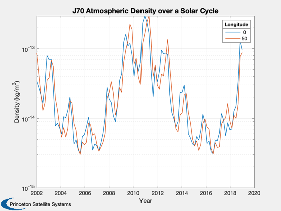
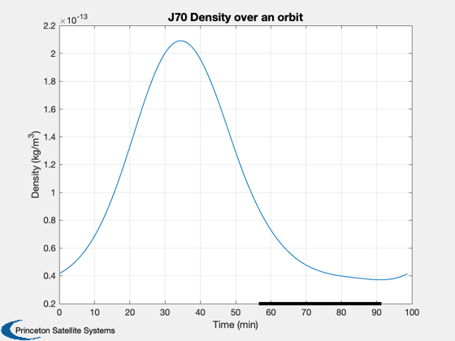

Demonstrate the J70 atmosphere model over a solar cycle.
Uses the solar flux predictions stored in SolarFluxPredictions.mat for the years 2002-2019. Computes the density for an altitude of 622 km.
------------------------------------------------------------------------ See also SolarFluxPrediction and AtmJ70., Plot2D, Date2JD, JD2DN, Period, RVFromKepler, Eclipse, GMSTime, SunV1 ------------------------------------------------------------------------
Contents
%-------------------------------------------------------------------------- % Copyright (c) 2008 Princeton Satellite Systems, Inc. % All rights reserved. %--------------------------------------------------------------------------
Choose longitude and altitude
Atmosphere density is dependent on location around Earth. Enter one or more longitudes and specify the altitude.
%--------------------------------------------------------- longitude = [0 50]; % deg nLon = length(longitude); alt = 7078-6378;
Look at 100 points between 2002 and 2019
All points are at 0 degrees latitude.
%----------------------------------------- yr = linspace(2002,2019); nYr = length(yr); degToMin = 24*60/360; jD0 = Date2JD([yr(1) 1 1 0 0 0]); rho = zeros(nLon,nYr); d = struct; for j = 1:nYr year = yr(j); jD = jD0 + 365.25*(yr(j)-yr(1)); [aP, f, fHat, fHat400] = SolarFluxPrediction( jD, 'nominal' ); d.aP = aP(1); d.f = f(1); d.fHat = fHat(1); d.fHat400 = fHat400(1); d.lat = 0; d.lng = 0; d.mm = GMSTime(jD)*degToMin; d.dd = JD2DN( jD ); d.yr = year; % altitude in km d.z = alt; for k = 1:nLon d.lng = longitude(k); rho(k,j) = AtmJ70( d ); end end
Plot over the solar cycle
J70 output is in g/cm3 so convert to kg/m3 when plotting.
%---------------------------------------------------------- Plot2D(yr,rho*1000,'Year', 'Density (kg/m^3)','J70 Atmospheric Density over a Solar Cycle','ylog'); ll = legend(num2str(longitude')); ll.Title.String = 'Longitude';
Look in detail at one orbit period.
Eclipses, if any, will be marked along the x axis using a dark line.
%----------------------------------- jD0 = Date2JD([2010 6 21, 17 0 0]); t = linspace(0,Period(alt+6378),200); inc = pi/6; % orbit inclination r = RVFromKepler([alt+6378 inc 0 0 0 0],t); d = struct; [aP, f, fHat, fHat400] = SolarFluxPrediction( jD0, 'nominal' ); d.aP = aP(1); d.f = f(1); d.fHat = fHat(1); d.fHat400 = fHat400(1); rho = zeros(1,200); for k = 1:length(t) d.jD = jD0 + t(k)/86400; d.rECI = r(:,k); rho(k) = AtmJ70( d ); end Plot2D( t/60, rho*1000,'Time (min)','Density (kg/m^3)','J70 Density over an orbit' ) [uSun,R] = SunV1( jD0 ); n = Eclipse( r, uSun*R ); ecl = find(n<1); if ~isempty(ecl) y = axis; hold on; f = plot( [t(ecl(1)) t(ecl(end))]/60,[y(3) y(3)], 'k', 'linewidth', 4 ); end %--------------------------------------